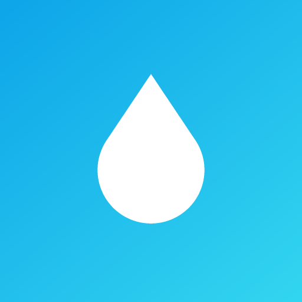

尿了吗
今天
—
0
次
点击记录一次
0
今日尿量 ml
—
平均间隔
0
今日饮水 ml
详细记录
喝了一杯水
记录明细
数据概览
近 7 天
近 30 天
每日排尿次数
24 小时分布
看时段规律
夜间 22:00–06:00 的次数计入「夜尿」
尿液颜色分布
1 号最淡 → 5 号最深
健康提示
以上提示基于你记录的数据做简单统计，仅供自我观察参考，不构成医疗建议。如有尿频、尿痛、血尿、夜尿明显增多等情况，请及时就医。
目标与偏好
每日排尿目标
用于首页圆环进度
每日尿量目标 (ml)
成年人常见 1000–2000 ml
一杯水的容量 (ml)
「喝了一杯水」按钮用
数据
数据保存在本机
—
导出数据（JSON 备份）
从 JSON 恢复
填充 30 天示例数据
清空全部数据
关于
📲 安装到手机桌面
📱
iPhone / iPad 安装方法：
用 Safari 打开本页 → 点底部「分享」按钮
⬆️
→ 往下滑选择
「添加到主屏幕」
→ 确认。之后就能像正常 App 一样全屏使用。
尿了吗 v1.1
一个记录排尿情况的小工具。
单机应用
——所有数据只存在你自己的设备上，不联网、不上传任何数据，因此无需工信部 App 备案。把这个页面「添加到主屏幕」，用起来就像原生 App。
📖 发布与备案指南（如何装到手机 / 要不要备案）
记录
统计
设置
记录一次
时间默认现在，可直接保存
时间
设为现在
大概尿量
不填也可以
少 ~100ml
中 ~200ml
多 ~400ml
不记录
尿液颜色
比色参考
尿急程度
可选
正常
有点急
很急
憋不住
排尿时疼痛 / 灼热
有的话建议留意并就医
备注
保存记录
删除这条记录